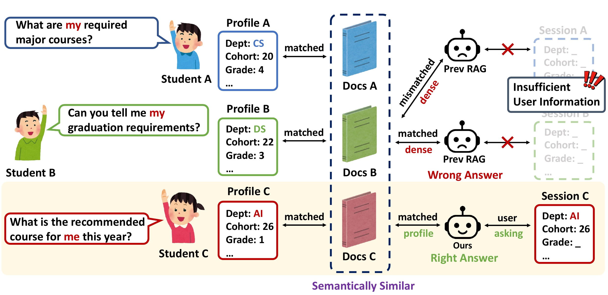
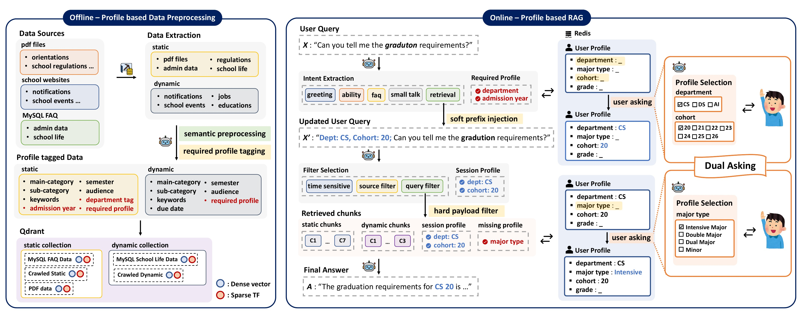
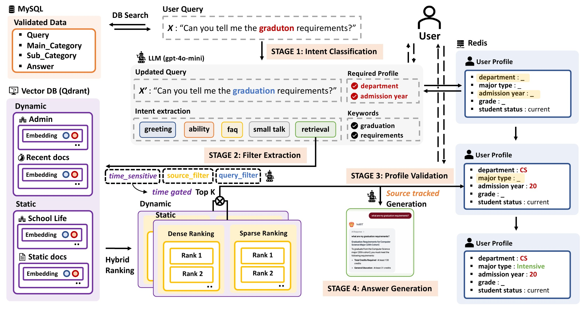
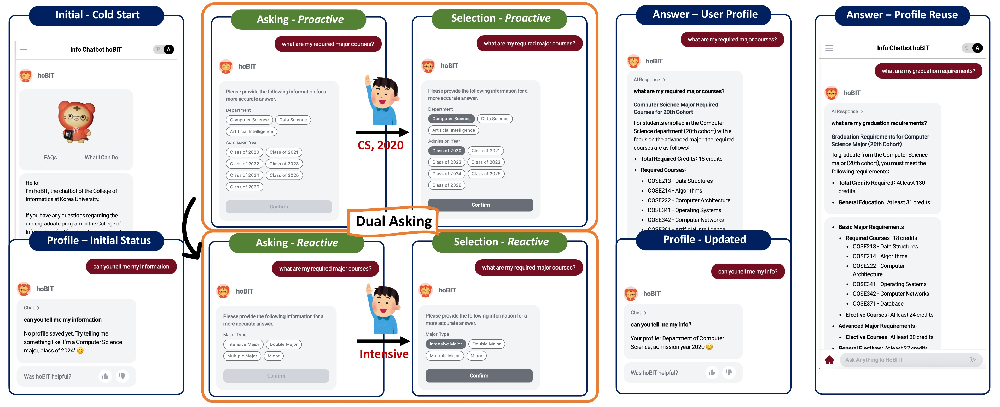
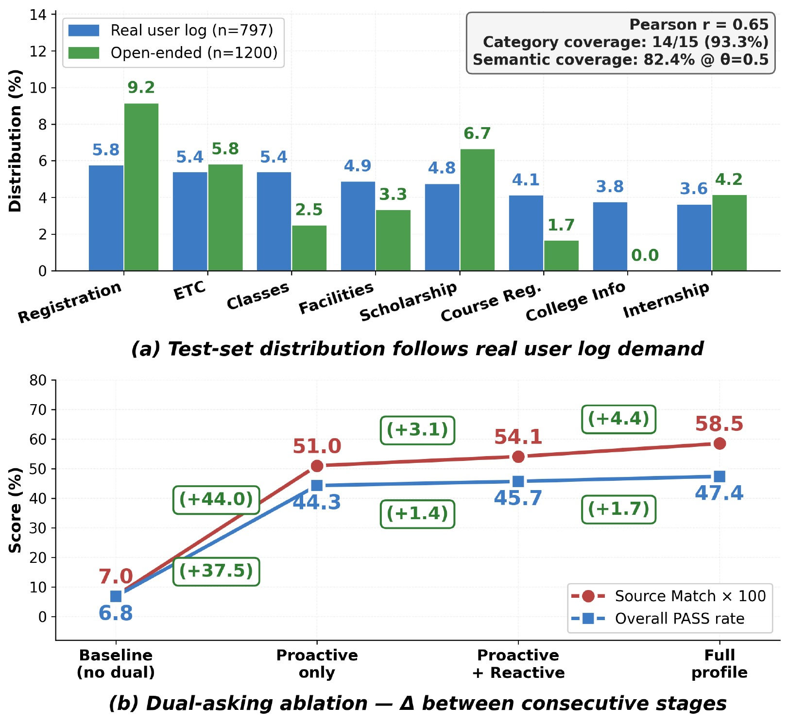

Academic advising is profile-dependent retrieval: semantic similarity alone is not enough.
Graduation, course, and major rules vary by department and cohort, so the same query can require different documents.
Chunks are tagged with department, admission year, and required profile fields before retrieval.
The bot asks for missing fields only when they are needed, then reuses them inside the session.
Like realistic search snippets, curriculum documents can look near-identical. hoBIT exposes the hidden profile signal that decides which evidence is correct.
"Can you tell me my graduation requirements?"
Wrong cohort, wrong answer, or insufficient user information.
Dept: CS, Cohort: 20; graduation requirements?
Correct cohort, source-tracked answer, reusable session profile.
Offline profile tagging meets online dual-asking, soft prefix injection, and hard payload filtering.

Intent classification, filter extraction, profile validation, and source-tracked answer generation run around a session profile.

A cold session collects missing profile fields; a warm session reuses them without asking again.

Profile injection dominates the retrieval stack and makes profile-blind boosters redundant.
Adding profile injection produces the largest jump in the deployed ablation.
Dual-asking plus profile-aware retrieval makes correct answers reachable.
Open retrievers and generators match or exceed the proprietary baseline on key metrics.

@inproceedings{anonymous2026hobit,
title = {hoBIT: A Profile-Aware Retrieval-Augmented Chatbot for University Academic Advising},
author = {Anonymous ACL submission},
booktitle = {Proceedings of EMNLP 2026: System Demonstrations},
year = {2026}
}